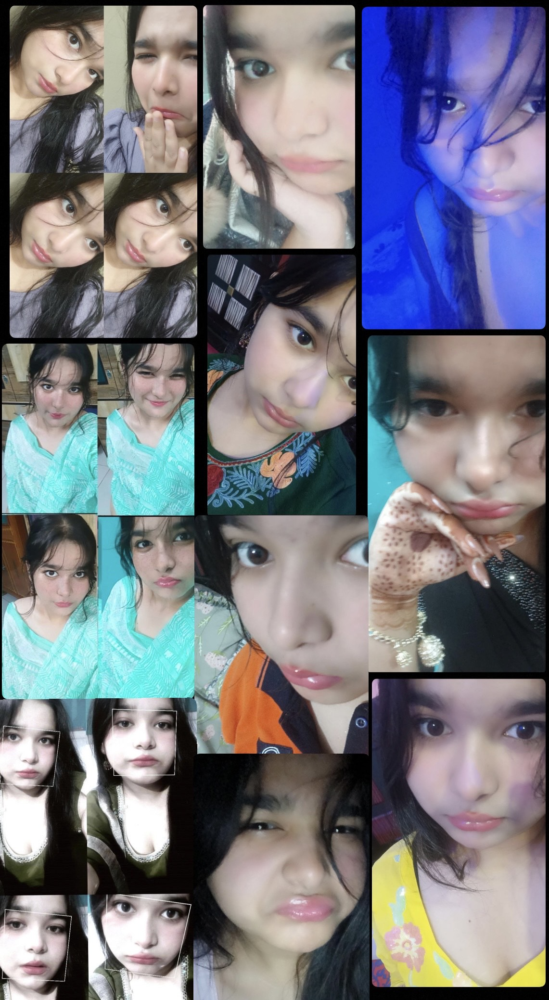
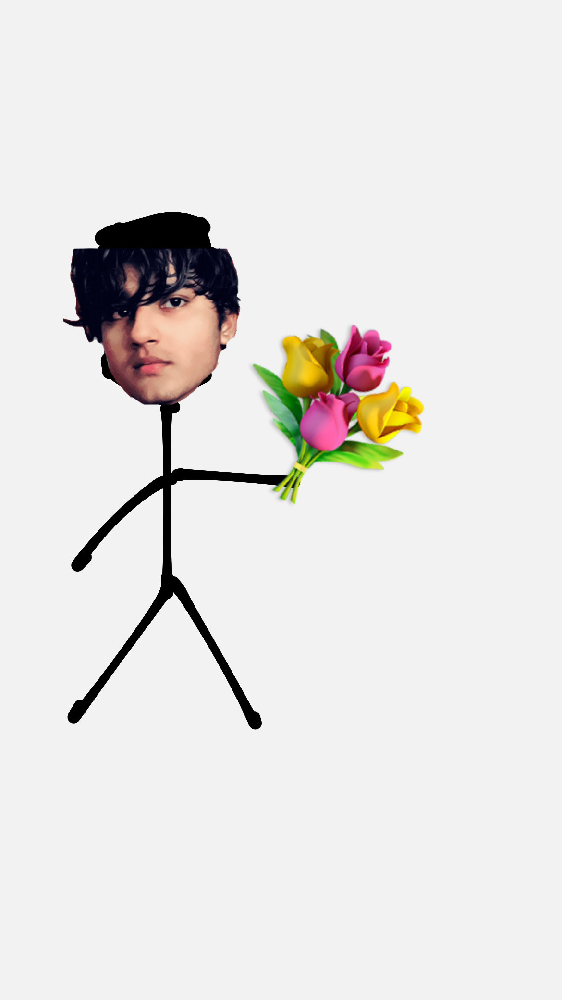

Choose a song to start:
Would you like to see something I wrote for you?
ssup money 😈☝🏻, you have now turned 18 years old. Being a fellow adult, it is my honour to welcome you to adulthood, bwhaha. Now for a month and twelve days, we’ll be the same age, which is kind of crazy. We have given each other more than seven months of our lives(six months in relationship). We know every single bit about each other and now, after seven months of spending time with each other, it is the first birthday that we are ever celebrating. Many more to come, obviously. I will try to make this one of your most memorable ones. We started talking in late july, I had a girlfriend back then who had no importance in my life, I was doing my favourite passtime. That being bullying people online. "Saturn GC". As soon as I got in I knew, it was perfect for me, for bullying purposes, It was strange that someone like you spent time in a gc like that. I was bullying the members, as usual. Then you replied to one of my trolling texts, "who tf are you dawg" I saw that text and I knew, you were not like one of these normies. I replied with what I usually reply with, "my name is connor, i am an android sent by cyberlife". We had a small conversation in the gc and then you asked me to slide into your dms and like any man would, I did slide. We started talking, had some late night conversations. Asked each other about ourselves, got to know each other more and I found myself a little bit attracted, towards you. And you found yourself weirdly attracted towards me too. At that point of time I didn't give it too much of a thought. I just thought "Yeah I like this girl" and that was the end of it. It didn't matter to me as much as it does now. I was more involved in my favourite passtime, that being bullying people online. We had conversations back then but they were not as meaningful, not as deep. Then someday, I really don't know what brought that switch in me but I felt like I wanted more than that, more than just these conversations where my investment was half-assed. I didn't know I had that in me, wanting more than just a half-assed investment, in a girl but as soon as that switch hit me, I felt like I needed nothing else in my life. I wanted all my focus to be on you, the idea of giving that gc anymore time of mine felt worthless and stupid. I just wanted you and me because it was all that mattered to me. You and me talking, you and me being together, you and me fighting, you and me making stupid jokes, you and me being madly in love. As time passed by, the idea of having a future with you became stronger and stronger. We started making plans. We thought it through. Our will to be together, stay together made us think it through. Now, we do have a plan, the plan being you coming here. I cannot really say how practical that plan is but I am taking your word for it because you do seem confident. Oh and how could I forget, that reel. That one reel. What a night that was. One of our best ones, I was laughing. You were laughing too. I was laughing on the guy and the fact that I was laughing made you laugh which is very adorable. I would sell my father's property to relive that night just so you know. There are a lot of positives in our relationship. The love, the clinginess from both the sides, the way we express each other, make each other feel better, make each other feel wanted, secured, assured and the list goes on. Even this letter, this website, all this I have worked hard upon, It is to make you feel special. To make you feel loved, if I succeed, I will be the happiest. There is no doubt that with positives, negatives do come too. We have had fights that have been emotionally draining, situations that got us messed up but what matters is that we learnt, grew. It only made us stronger. We learned more about each other with every single argument and obviously, we are still learning and I think we'll be learning till the end of our lives and maybe some more time too bwhahaha because we both are very complex human beings. You are more complex just so you know. The fact that it's been more than six months and we are yet to lose that spark which comes in the start of a relationship is genuinely crazy and proves how special and strong our bond is, our love is. To wrap it up, I will just like to say that I have worked pretty hard for this and I hope the efforts are evident. My love, my plans and intentions with you. I have loved you and will continue to do so, in life and afterlife too. You mean everything to me. We will make it work, won't be easy. It sure will not get as bad as it got some weeks ago, we just need to be careful. Happy birthday again, Divyanshi. Baar baar din ye aaye baar baar dil ye gaaye tum jiyo hazaro saal ye meri hai aarzu. I love you the most. I love you forever, *mwah*. Yours forever Prathamesh
Well, I thought this was something I could do.
 